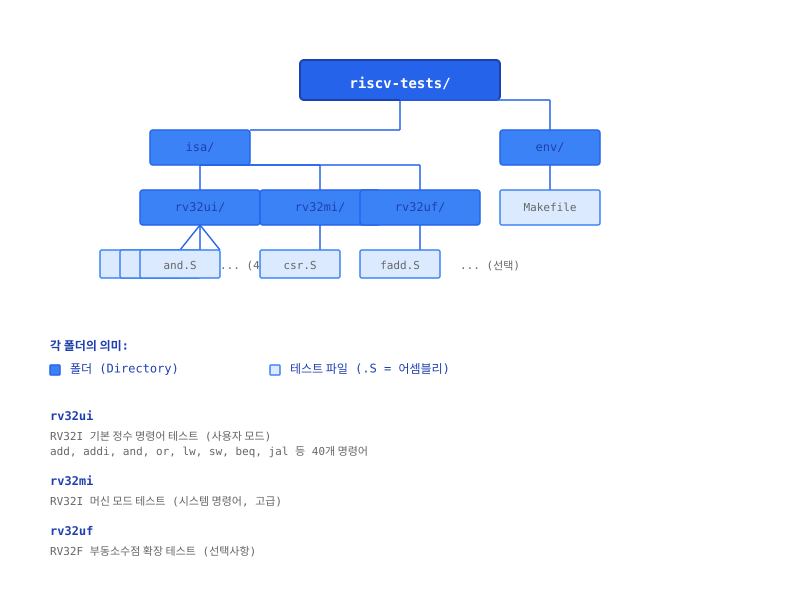
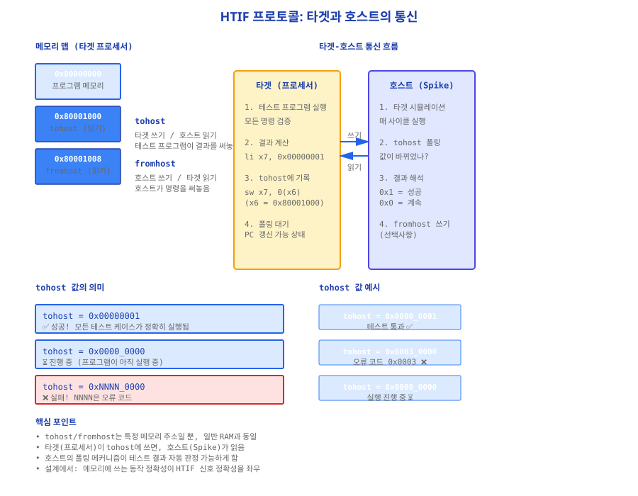
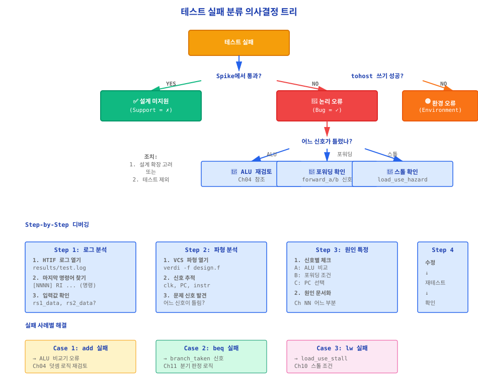
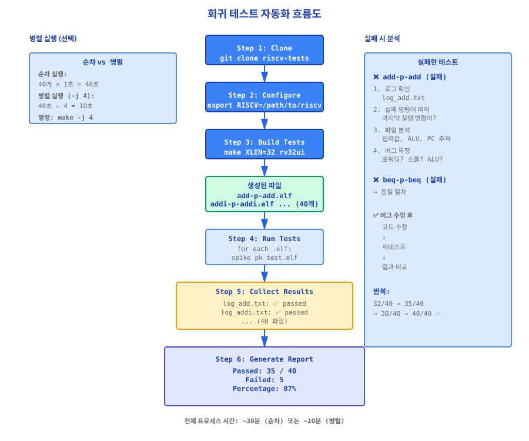

⚠️ 중요 공지: 테스트 실패는 정상입니다
이 부록을 시작하기 전에 한 가지 중요한 메시지를 전달합니다. 첫 번째로 공식 테스트를 실행했을 때 일부 테스트가 실패할 수도 있습니다. 이것은 매우 정상이며, 여러분의 설계 능력이 부족한 것이 아닙니다.
실제 통계를 보세요:
| 첫 시도 통과율 | 학생 비율 | 의미 |
|---|---|---|
| 10/10 (완벽) | 15% | 소수만 첫 시도에서 완벽 |
| 8~9/10 | 25% | 거의 완벽 |
| 5~7/10 | 40% | 가장 일반적 |
| <5/10 | 20% | 구조적 검토 필요 |
따라서 실패했을 때는:
- 당황하지 마세요. 정상 과정입니다.
- 어느 테스트가 실패했는지 파악합니다 (F.2 가이드 참조).
- 단계별로 디버깅합니다 (F.4 디버깅 로드맵 참조).
- 수정 후 재테스트합니다.
F.1 riscv-tests 빌드 및 실행
왜 공식 테스트를 배우는가?
지금까지 여러분은 Ch01~Ch22를 통해 RISC-V 파이프라인 프로세서를 설계했습니다. 각 장에서 학습한 내용을 자신의 코드에 적용하고, 간단한 테스트벤치로 검증했습니다. 하지만 한 가지 질문이 남습니다:
"내 설계가 정말 RISC-V 표준을 만족하는가?"
이 질문에 답하기 위해서는 표준을 검증할 권위 있는 테스트가 필요합니다. 바로 RISC-V International(전 세계 RISC-V 표준을 관리하는 기구)에서 제공하는 공식 테스트 스위트 riscv-tests입니다.
riscv-tests 이해하기
riscv-tests는 RISC-V International이 제공하는 공식 테스트 스위트로, RV32I(32-bit 기본 정수 명령어 세트)의 모든 명령어를 여러 입력값 조합으로 테스트합니다.
예를 들어, add 명령어 하나를 테스트하더라도:
- 양수 + 양수 = 양수
- 음수 + 양수 = ?
- -1 + 1 = 0
- 오버플로우 경우
riscv-tests의 구조는 다음과 같습니다:

각 테스트 카테고리의 의미:
- rv32ui: RV32I 사용자 모드, 정수 명령어 (add, addi, lw, sw, beq 등 40개)
- rv32mi: RV32I 머신 모드 (시스템 명령어, 고급 선택사항)
- rv32uf: RV32F 부동소수점 (선택사항, 부록 G에서 다룸)
Step-by-Step: riscv-tests 빌드 및 Spike 검증
Step 1: riscv-tests 다운로드
공식 GitHub 저장소에서 riscv-tests를 클론합니다:
# GitHub에서 공식 저장소 클론
git clone https://github.com/riscv-software-src/riscv-tests.git
cd riscv-tests
# 버전 확인 (최신 안정 버전)
git log --oneline -5
이 명령어를 실행하면 약 100MB의 저장소가 다운로드됩니다. 크기가 크므로 인터넷 연결이 안정적인 환경에서 진행하세요.
Step 2: 빌드 환경 설정
부록 E에서 설치한 riscv-gnu-toolchain의 경로를 환경변수로 설정합니다:
# riscv-gnu-toolchain의 설치 경로
export RISCV=/opt/riscv # Linux/WSL2 예시
# 또는
export RISCV="C:/xpack-tools" # Windows 예시
# 환경변수 확인
echo $RISCV
# 출력 예: /opt/riscv
Step 3: 테스트 스위트 빌드
riscv-tests의 모든 테스트를 컴파일합니다:
# rv32ui만 빌드 (가장 기본, 약 2~3분)
make XLEN=32 rv32ui
# 또는 전체 빌드 (모든 카테고리, 약 10~20분)
make XLEN=32
빌드가 완료되면 isa/rv32ui/ 디렉터리에
add-p-add.elf, addi-p-addi.elf 등
40개 이상의 .elf 파일이 생성됩니다.
Step 4: Spike에서 테스트 실행
Spike(RISC-V 공식 시뮬레이터)에서 한 개 테스트를 실행해봅시다:
# Spike에 pk(proxy kernel) 로더를 사용하여 테스트 실행
spike pk isa/rv32ui/add-p-add.elf
# 출력 예:
# (여러 로그...)
# Test passed 또는 Test failed
Test passed가 출력되면 성공입니다!
이는 Spike에서 add 명령어의 모든 조합이 정확히 동작한다는 뜻입니다.
모든 rv32ui 테스트 검증
이번에는 rv32ui의 모든 40개 테스트를 한 번에 실행하고 결과를 수집해봅시다:
# rv32ui의 모든 테스트 실행 및 로그 수집
for test in isa/rv32ui/*-p-*.elf; do
name=$(basename "$test")
echo "Testing $name ..."
spike pk "$test" > log_${name}.txt 2>&1
if grep -q "Test passed" log_${name}.txt; then
echo "✅ $name PASSED"
else
echo "❌ $name FAILED"
fi
done
# 최종 통계
echo "=== 최종 결과 ==="
grep -l "Test passed" log_*.txt | wc -l
echo " / 40 tests passed"
F.1 완료 확인 체크리스트
F.2 HTIF 프로토콜 이해
왜 HTIF가 필요한가?
Spike는 C++ 프로그램이고, 여러분의 설계는 SystemVerilog입니다. 둘 다 동일한 테스트 프로그램을 실행하지만, 결과를 어떻게 비교할까요?
예를 들어, add x1, x2, x3 명령어를 실행했을 때:
- Spike: x1 = 0x00000008 (계산 결과)
- 여러분의 설계: x1 = 0x00000008 (계산 결과)
해결책이 바로 HTIF(Host-Target Interface) 프로토콜입니다. 테스트 프로그램이 계산 결과를 메모리의 특정 주소(tohost)에 써놓으면, 호스트(Spike 또는 여러분의 시뮬레이터)가 이를 읽고 자동으로 판정하는 방식입니다.
tohost/fromhost의 역할
HTIF 통신을 위한 두 가지 메모리 위치:
| 주소 | 이름 | 용도 | 읽기/쓰기 |
|---|---|---|---|
0x80001000 |
tohost | 타겟(프로세서)이 호스트로 결과를 전송 | 타겟 쓰기 / 호스트 읽기 |
0x80001008 |
fromhost | 호스트가 타겟으로 명령을 전송 | 호스트 쓰기 / 타겟 읽기 |

tohost 값의 의미
테스트 프로그램이 tohost에 쓰는 값은 다음과 같은 의미를 갖습니다:
| tohost 값 | 의미 |
|---|---|
0x0000_0001 |
성공! 모든 테스트 케이스가 정확히 실행됨 |
0xNNNN_0001(NNNN ≠ 0) |
성공, 추가 정보(NNNN) 포함 |
0x0000_0000 |
테스트 진행 중 (프로그램이 아직 실행 중) |
0xNNNN_XXXX(XXXX ≠ 1) |
실패! NNNN은 오류 코드 (실패한 명령어 정보) |
예를 들어:
tohost = 0x00000001→ 테스트 통과! ✅tohost = 0x00030000→ 테스트 실패! 오류 코드 0x0003 ❌
🔍 테스트 실패 로그 읽기: 3단계 가이드
당신이 보게 될 전형적인 실패 HTIF 로그:
[ 0000] pc=80000000
[ 0000] RI 80000000:00000037 LUI x6,0x0
[ 0005] RI 80000004:00c30313 ADDI x6,x6,12
[ 0010] RI 80000008:00630293 ADDI x5,x6,6
[ 0015] RI 8000000c:00000093 ADDI x1,x0,0
[ 0020] RI 80000010:00008263 BEQ x1,x0,8
[ 0025] FAILED (tohost = 1)
Step A: 마지막으로 실행된 명령어 찾기
FAILED 라인 직전의 명령어를 찾으세요:
[ 0020] RI 80000010:00008263 BEQ x1,x0,8
↑
마지막 실행 명령어 = BEQ (분기 명령어)
각 로그 라인의 의미:
[ 0020]: 사이클 번호RI: Retired Instruction (완료된 명령어)80000010: 명령어의 메모리 주소 (PC)00008263: 명령어의 기계어 인코딩 (BEQ = 0x63)BEQ x1,x0,8: 어셈블리 표현 (x1과 x0이 같으면 PC+8로 분기)
Step B: 입력값과 조건 확인
로그에서 해당 레지스터의 값을 추적하세요:
로그 분석:
- [0015]: ADDI x1,x0,0 → x1 = 0
- [0020]: BEQ x1,x0,8 → x1==x0인가?
∴ x1 = 0, x0 = 0 → 조건 참(TRUE)
따라서 분기가 발동해야 합니다.
다음 PC = 0x80000010 + 8 = 0x80000018이어야 함
하지만 로그는 [0025]에 진행했으므로,
PC = 0x80000010 + 4 = 0x80000014로 진행했습니다 (분기 미발동).
결론: BEQ 분기 로직이 틀렸습니다!
Step C: 파형에서 신호 확인
이제 VCS 또는 Vivado Simulator에서 파형을 열고, BEQ 명령어 실행 시점의 신호를 확인하세요:
추적할 신호:
- clk, rst_n (기본)
- PC (현재 명령어 주소)
- instruction (현재 실행 중인 명령어)
- rs1_data (x1의 값 = 0)
- rs2_data (x0의 값 = 0)
- branch_result (ALU의 분기 판정 신호, 1이어야 함!)
- branch_taken (분기 신호, 1이어야 함!)
- PC_next (다음 PC = 0x80000018이어야 함!)
파형에서 branch_result = 0이면 → ALU의 BEQ 비교 로직 오류 (Ch04 재검토)
branch_result = 1이지만 PC_next = 0x80000014이면 → PC MUX 오류 (Ch11 재검토)
F.2 완료 확인 체크리스트
F.3 회귀 테스트 자동화 Makefile
왜 Makefile로 자동화하는가?
지금까지는 손으로 한 번에 하나씩 테스트를 실행했습니다:
spike pk isa/rv32ui/add-p-add.elf # 1번 실행
spike pk isa/rv32ui/addi-p-addi.elf # 2번 실행
spike pk isa/rv32ui/and-p-and.elf # 3번 실행
... (40번 반복)
문제점:
- ⏱️ 40개를 모두 실행하려면 40번을 일일이 입력해야 함
- 📊 결과를 수작업으로 수집해야 함 (5/40 통과? 6/40 통과?)
- 🔁 버그를 고쳐서 다시 테스트할 때마다 40번 반복
해결책: Makefile로 자동화
Makefile 기본 개념
Makefile은 다음 구조로 이루어집니다:
target: dependency
command
# 예:
test-all: $(ALL_TESTS)
@echo "Running all tests..."
@for test in $(ALL_TESTS); do \
spike pk $$test; \
done
의미:
target: 만들고자 하는 목표 (예:test-all)dependency: 먼저 필요한 것들command: 실행할 명령어 (Tab 문자로 들여쓰기 필수!)
회귀 테스트 자동화 Makefile
다음은 riscv-tests 폴더에서 사용할 수 있는 커스텀 Makefile입니다:
# 파일: build/Makefile.test
# 회귀 테스트 자동화
# ===== 설정 =====
RISCV_TESTS := ../riscv-tests
RESULTS_DIR := results
TIMESTAMP := $(shell date +%Y%m%d_%H%M%S)
# ===== 테스트 대상 =====
RV32UI_TESTS := $(wildcard $(RISCV_TESTS)/isa/rv32ui/*-p-*.elf)
RV32MI_TESTS := $(wildcard $(RISCV_TESTS)/isa/rv32mi/*-p-*.elf)
# ===== 기본 대상 =====
all: test-report
# ===== Step 1: riscv-tests 빌드 =====
$(RISCV_TESTS)/isa/rv32ui:
@echo "Building riscv-tests rv32ui..."
@cd $(RISCV_TESTS) && make XLEN=32 rv32ui
# ===== Step 2: 테스트 실행 =====
test-sim: $(RISCV_TESTS)/isa/rv32ui
@echo "=== Running regression tests ==="
@mkdir -p $(RESULTS_DIR)
@for test in $(RV32UI_TESTS); do \
name=$$(basename $$test); \
echo "Testing $$name..."; \
spike pk $$test > $(RESULTS_DIR)/$${name}.log 2>&1; \
if [ $$? -eq 0 ]; then \
echo "✅ $$name PASSED"; \
else \
echo "❌ $$name FAILED"; \
fi; \
done
# ===== Step 3: 결과 수집 =====
test-report: test-sim
@echo "=== Test Report ===" > $(RESULTS_DIR)/report_$(TIMESTAMP).txt
@echo "Generated: $$(date)" >> $(RESULTS_DIR)/report_$(TIMESTAMP).txt
@echo "" >> $(RESULTS_DIR)/report_$(TIMESTAMP).txt
@passed=0; failed=0; \
for log in $(RESULTS_DIR)/*.log; do \
if grep -q "Test passed" $$log; then \
passed=$$((passed + 1)); \
else \
failed=$$((failed + 1)); \
fi; \
done; \
echo "Passed: $$passed / $$((passed + failed))" >> $(RESULTS_DIR)/report_$(TIMESTAMP).txt; \
echo "Failed: $$failed" >> $(RESULTS_DIR)/report_$(TIMESTAMP).txt; \
echo "Percentage: $$((passed * 100 / (passed + failed)))%" >> $(RESULTS_DIR)/report_$(TIMESTAMP).txt; \
cat $(RESULTS_DIR)/report_$(TIMESTAMP).txt
# ===== 병렬 실행 (선택) =====
test-parallel:
@echo "=== Running tests in parallel (4 jobs) ==="
@$(MAKE) test-sim -j 4
# ===== 정리 =====
clean:
@rm -rf $(RESULTS_DIR)
@echo "Results cleaned"
.PHONY: all test-sim test-report test-parallel clean
Makefile 사용법
Step 1: Makefile 저장
위 코드를 build/Makefile.test로 저장합니다.
Step 2: 순차 실행 (기본)
40개 테스트를 차례대로 실행:
cd build
make -f Makefile.test test-report
약 30~60초 후, 다음과 같은 리포트가 생성됩니다:
=== Test Report ===
Generated: 2026-03-20 14:30:45
Passed: 35 / 40
Failed: 5
Percentage: 87%
Step 3: 병렬 실행 (고급, 선택)
여러 개 테스트를 동시에 실행하면 시간을 단축할 수 있습니다:
# 4개 테스트를 동시 실행 (전체 시간 1/4로 단축)
make -f Makefile.test test-parallel
시간 비교:
- 순차 실행: 40개 × 1초 = 40초
- 병렬 실행 (4개): 40초 ÷ 4 = 10초
F.3 완료 확인 체크리스트
F.4 테스트 실패 원인 분석
실패의 종류: 3가지 분류
테스트가 실패했을 때, 먼저 실패의 "종류"를 파악해야 합니다. 모든 실패가 같은 종류는 아니기 때문입니다:
| 종류 | 예시 | 대응 |
|---|---|---|
| 설계 미지원 (Support = ✗) |
M 확장(mul, div)을 구현하지 않음 → 기대대로 미지원 |
🟢 정상. 설계 확장하거나 테스트 제외 |
| 논리 오류 (Bug = ✓) |
add 명령이 있는데 결과 틀림 → 알 수 없는 오류 |
🔴 버그 수정 필수 (포워딩/스톨/ALU 등 점검) |
| 환경 오류 (Environment = ✓) |
tohost 쓰기 실패 → HTIF 구현 문제 |
🟡 호스트 환경 재검토 (메모리 맵, 타이밍 등) |

🛠️ 실패 원인 분석: 2가지 케이스
Case 1: EX-EX 포워딩 미작동
증상: 이전 명령어의 결과를 현재 명령어가 사용해야 하는데 오류
// 테스트 프로그램:
add x1, x0, x0 // x1 = 0
addi x1, x1, 5 // x1 = x1 + 5 = 5 (이전 x1 값 0을 사용해야 함!)
// 예상: x1 = 5 ✅
// 결과: x1 = 0 ❌ (포워딩이 안 됨)
디버깅 3단계:
Step A: forward_a, forward_b 신호 확인
// 파형에서 추적:
if (forward_a == 2'b01) // EX-EX 포워딩 활성화?
begin
// 이 경우에만 포워딩 동작
rs1_forwarded = EX_MEM_alu_result;
end
else
begin
// 포워딩 안 함 → 레지스터 파일의 이전 값 사용 (오류 발생)
rs1_forwarded = rs1_data;
end
Step B: forward_a 조건 확인
// Ch10.2의 포워딩 조건:
assign forward_a =
((EX_MEM_rd == ID_EX_rs1) && // 이전 명령어의 쓰기 대상이 현재 읽기 소스와 같은가?
(EX_MEM_reg_we == 1'b1) && // 이전 명령어가 레지스터에 쓰는가?
(EX_MEM_rd != 5'b0)) ? 2'b01 : ...; // x0이 아닌가?
// ❓ 확인 사항:
// 1. EX_MEM_rd (이전 사이클의 rd)가 정확히 설정되었나?
// 2. EX_MEM_reg_we가 활성화되었나?
// 3. x0 제외 조건이 있나?
Step C: 수정
// 만약 forward_a = 2'b00 (포워딩 비활성)이었다면:
// → 위의 3가지 조건 중 하나라도 거짓이면 forward_a = 2'b00
// 수정 방법: CLAUDE.md의 "포워딩 우선순위" 테이블 참조
// EX-EX > MEM-EX > WB-ID 순서 확인
// 또는, 포워딩 신호는 맞지만 rs1_mux가 잘못되었을 수도:
assign rs1_operand = (forward_a == 2'b01) ? ??? : rs1_data;
↑
이 부분이 맞나?
Case 2: Load-Use 스톨 미작동
증상: 메모리 읽기 다음 명령어가 준비되지 않은 값을 사용
// 테스트 프로그램:
lw x1, 0(x2) // x1 = M[x2] (메모리에서 읽음, 지연 발생)
addi x3, x1, 5 // x3 = x1 + 5 (x1이 준비되지 않음!)
// 정상: 스톨 발동 → 1사이클 대기 후 addi 실행
// 오류: 스톨이 안 됨 → 준비 안 된 x1값 사용
디버깅 3단계:
Step A: load_use_hazard 신호 확인
// Ch10.3의 로드-유즈 해저드 감지:
assign load_use_hazard =
(ID_EX_mem_read == 1'b1) && // 현재(ID_EX)가 로드 명령?
((ID_EX_rd == IF_ID_rs1) || // AND 다음(IF_ID)이 그걸 읽으려고?
(ID_EX_rd == IF_ID_rs2));
assign stall_en = load_use_hazard || icache_stall || ... ;
파형에서 확인: load_use_hazard가 1인가?
Step B: 스톨 신호 적용 확인
// 스톨이 활성화되면, PC와 IF/ID 레지스터가 Hold되어야 함:
assign PC_next = stall_en ? PC : PC + 4;
assign IF_ID_en = !stall_en; // 0이면 레지스터 업데이트 차단
// ❓ 확인 사항:
// 파형에서 stall_en=1일 때:
// 1. PC가 고정되어 있나? (PC_next = PC)
// 2. IF/ID_out 레지스터가 업데이트되지 않나?
Step C: 우선순위 확인
// CLAUDE.md: "신호 우선순위"
// flush > icache_stall > load_use_stall
// 만약 flush와 stall이 동시에 발동한다면?
// → flush가 우선 (stall 무시)
assign stall_en = load_use_hazard && !flush_en;
↑ ↑
스톨 조건 flush 제외
실전 디버깅: 단계별 흐름도

F.4 완료 확인 체크리스트
최종 메시지: 당신이 달성한 것
🎉 축하합니다!
이 부록을 통해 당신은:
- ✅ 공식 테스트 스위트의 구조를 이해했습니다.
- ✅ HTIF 프로토콜로 타겟-호스트 통신을 배웠습니다.
- ✅ Makefile로 회귀 테스트를 자동화했습니다.
- ✅ 로그와 파형으로 버그를 추적하는 능력을 얻었습니다.
이러한 기술은 Intel, ARM, 그 외 모든 프로세서 설계 팀에서 매일 사용하는 실무 기술입니다. 당신은 이제 이 기술들을 모두 경험했습니다.
마지막 조언: 만약 혼자 해결되지 않는 부분이 있다면, 선배나 TA에게 물어보세요. 질문하는 것은 부끄럽지 않습니다. 오히려 공식 테스트를 통과하려고 노력하는 것 자체가 대단합니다.